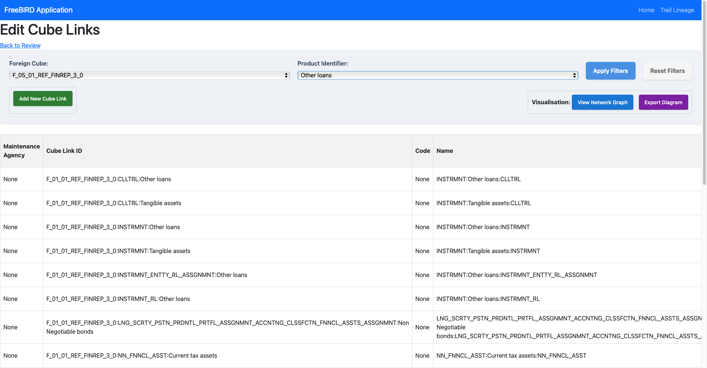
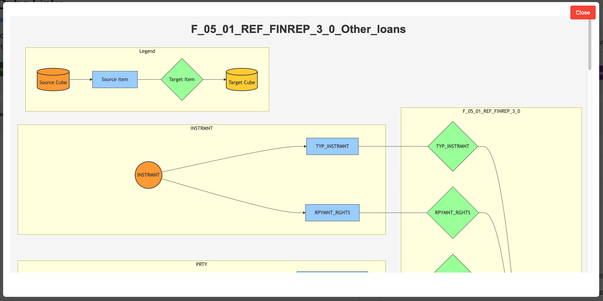

Feature Overview
The Cube Links View and Edit interface is a sophisticated visualization and management tool within Eclipse Free BIRD Tools that enables users to create, manage, and visualize relationships between data cubes and their components. This feature provides both tabular and graphical representations of data linking, showing how information moves from source cubes through transformations to target cubes in regulatory reporting frameworks.
Purpose
Cube Links View and Edit addresses the complexity of modern regulatory data relationships by providing:
- Visual Data Lineage: Understand how data flows from input to output layer
- Relationship Management: Create and maintain connections between data cubes
- Network Visualization: See complex relationships through interactive diagrams
- Quality Assurance: Validate data transformation paths before production
This feature is essential for data architects, compliance officers, and IT professionals who need to maintain transparent, auditable data flows in regulatory reporting environments.
Getting Started
Prerequisites
Before using Cube Links View and Edit, ensure:
- Data cubes are properly configured in the system (through the launch of the first step in the workflow dashboard)
- Source and target cubes contain valid data structures and the linkage has been generated (by step 2 in the workflow dashboard)
Accessing the Interface
Navigate to the FreeBIRD Application and access the Cube Links feature from the main dashboard. The interface provides both tabular views for detailed management and network graphs for visual understanding.

Step-by-Step Guide
Understanding the Interface
Main Control Panel
The interface is organized into several key areas:
Selection Filters:
- Foreign Cube Selector: Choose the source cube for viewing/editing links (e.g.,
F_05_01_REF_FINREP_3_0) - Product Identifier Selector: Filter cube links by product type (e.g.,
Other loans)
Action Buttons:
- Apply Filters (Blue): Apply selected criteria to the data grid
- Reset Filters (Gray): Clear all filters and return to default view
- Add New Cube Link (Green): Create new cube link relationships
- View Network Graph (Blue): Display graphical representation
- Export Diagram (Purple): Export network diagrams
Data Grid Structure
The main grid displays cube link information with these columns:
- Maintenance Agency: Entity responsible for maintaining the link
- Cube Link ID: Unique identifier (format:
ForeignCube::TargetItem) - Code: Classification code
- Name: Descriptive name (format:
INSTRUMENT:Description:TARGET)
Creating New Cube Links
Step 1: Initiate Creation
- Click the Add New Cube Link button
- A dialog window opens for configuration
Step 2: Configure the Link
- Select source cube from dropdown menu
- Choose source cube to connect
- Define target cube for mapping
Step 3: Save and Validate
- Click Save to create the link
- The new link appears in the data grid
- Verify the connection through the network graph
Using Network Graph Visualization

Understanding Visual Elements:
- Source Cube (Orange cylinder): Originating data cube
- Source Items (Blue rectangle): Individual data elements
- Target Items (Green diamond): Transformation points
- Target Cube (Yellow cylinder): Destination cube
- Arrows: Data flow direction
Navigation Controls:
- Scroll: Use mouse wheel or zoom controls
- Close: Red button to exit visualization
Filtering and Searching
Apply Filters:
- Select desired Foreign Cube from dropdown
- Choose Product Identifier if needed
- Click Apply Filters to update the view
- Use Reset Filters to clear selections
View Filtered Results:
- The data grid updates to show only defined matching links
- Network graph reflects the links to the selected output layer cube.
Exporting Diagrams
Export Process:
- Open the network graph view
- Click Export Diagram button (as Markdown)
Common Issues and Solutions
Missing Cube Links:
- Verify current filter settings are not too restrictive
- Confirm the source cubes exist and are accessible
- Add cube links if needed for your usecase (or defined join_configurations to get the cube links dependent on your type of instrument).
Link Creation Failures (running step 2):
- Verify both source and target cubes exist in the system
System Validation
The system automatically performs:
- Circular reference detection and prevention
- Duplicate link identification (Through the show duplicate member links view)
- Required field validation
- Data type compatibility checks
Conclusion
The Cube Links View and Edit feature provides essential capabilities for managing complex data relationships in regulatory environments. Through its combination of detailed tabular views and intuitive network visualizations, it enables both technical and business users to understand, create, and maintain the data lineage critical for accurate regulatory reporting.
Next Steps
- Explore the Workflow Dashboard Guide to understand how cube links integrate with workflows
- Review the Member Hierarchy Editor for related data structure management
- Learn about Mapping Editor for detailed transformation rules
For assistance with cube link design or complex relationship modeling, connect with the community via Eclipse Chat or email efbt-dev@eclipse.org.